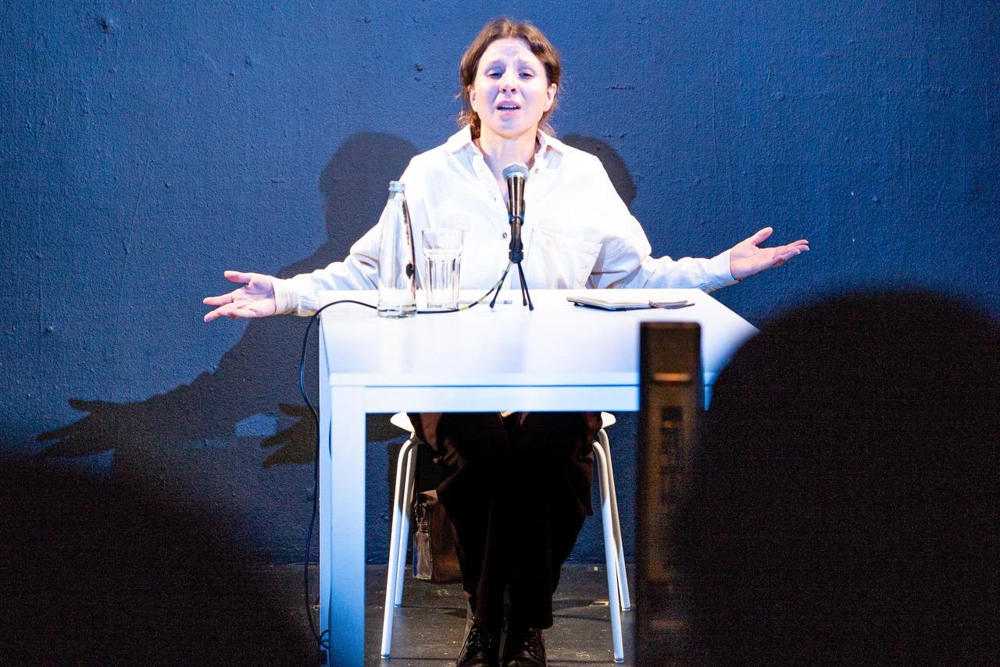

¿De quién es esta época,
Pasolini?
Una mujer. Un museo. Una conversación imposible.

Una mujer del presente interroga una conciencia reconstruida de Pier Paolo Pasolini. La búsqueda íntima se vuelve una conversación urgente sobre cómo queremos vivir.
Valentina Blando · Dramaturgia Ettore Oldi · Dirección Gianluca BarbadoriAsistencia de dirección Daniel Francisco Villamizar Díaz
Producción Ponte tra Culture y La Gruta
Una conversación que nos alcanza.
Una mujer va a un museo buscando respuestas. La espera Pier Paolo Pasolini: no como recuerdo ni como homenaje, sino como una conciencia reconstruida que vuelve a hablar cincuenta años después de su asesinato.
Una actriz, una mesa, un micrófono y un parlante construyen un encuentro imposible. Lo que comienza como una búsqueda personal se transforma en una conversación urgente sobre nuestro tiempo.
La soledad contemporánea, la uniformidad de la vida cotidiana, el avance de la tecnología sobre la experiencia humana, la pérdida del sentido colectivo y la crisis de los vínculos atraviesan este diálogo. Esta vez es una mujer quien ocupa el centro de la escena: llega para interrogar, confrontar y poner a prueba el pensamiento de Pasolini.
Volver a preguntar.
¿Qué significa resistir a la homogeneización cultural? ¿Cómo construir comunidad en tiempos de aislamiento? ¿Qué lugar ocupan el arte, la imaginación y la palabra crítica frente a las formas contemporáneas del poder?
Más que reconstruir la biografía del autor, la pieza busca activar sus preguntas en el presente. Propone un encuentro entre generaciones, vivencias y experiencias para recuperar la duda y la capacidad de imaginar, colectivamente, cómo queremos vivir.
La obra en el espacio
Concebida para teatros, museos, auditorios, galerías y espacios no convencionales, la propuesta se adapta a distintos contextos manteniendo la esencia de su dispositivo escénico.
Equipo artístico
- Actuación
- Valentina Blando
- Dramaturgia
- Ettore Oldi
- Dirección
- Gianluca Barbadori
- Asistencia de dirección
- Daniel Francisco Villamizar Díaz
- Producción de sonido
- Camilo Miranda
- Producción
- Ponte tra Culture Italia / Colombia y La Gruta